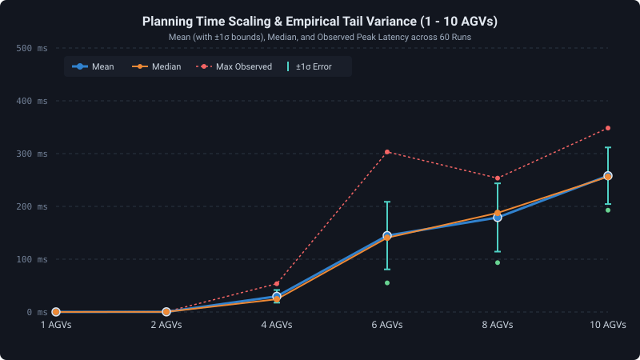
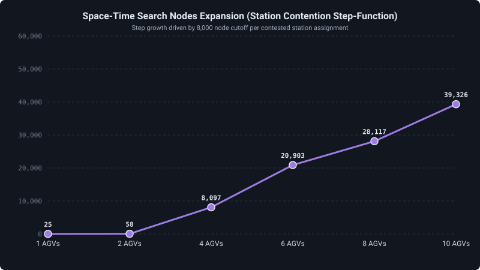
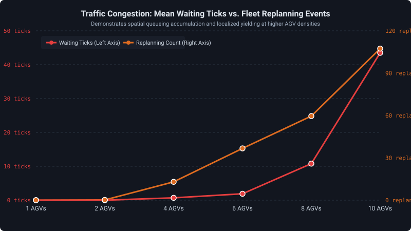
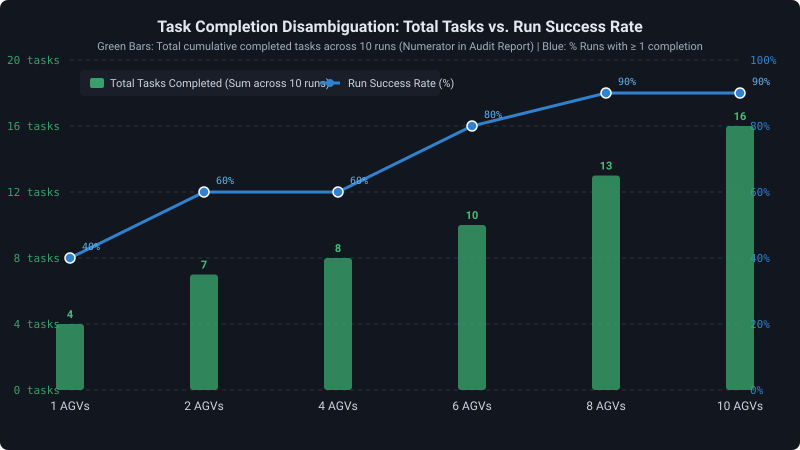
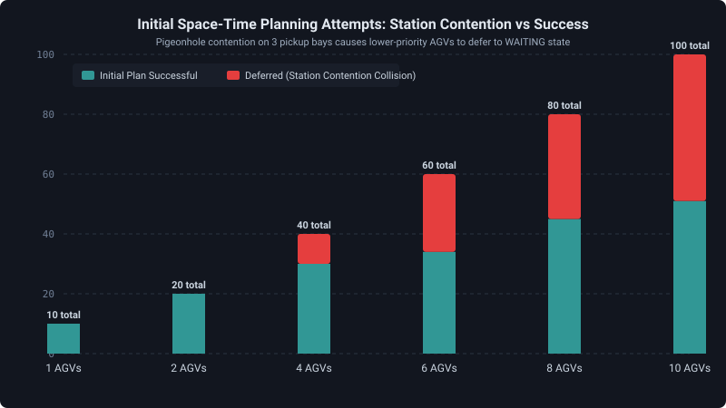

Independent empirical evaluation of Multi-Agent Cooperative A* Path Planning across 1, 2, 4, 6, 8, and 10 AGV configurations on a 20×14 grid warehouse floor.
| Fleet Size | Mean Planning Time | Median Time | Min / Max Time | Std Dev (σ) | Mean Nodes | Mean Makespan | Mean Wait Ticks | Mean Replans | Total Tasks Completed | Run Success Rate | Contention Deferred Plans |
|---|---|---|---|---|---|---|---|---|---|---|---|
| 1 AGVs | 0.13 ms | 0.12 ms | 0.05 / 0.28 ms | ±0.07 ms | 25 | 10.7 ticks | 0.0 ticks | 0.0 | 4 tasks (0.4/run) | 40% | 0 / 10 (100.0% initial) |
| 2 AGVs | 0.28 ms | 0.26 ms | 0.15 / 0.52 ms | ±0.11 ms | 58 | 16.8 ticks | 0.0 ticks | 0.2 | 7 tasks (0.7/run) | 60% | 0 / 20 (100.0% initial) |
| 4 AGVs | 29.68 ms | 24.19 ms | 22.99 / 53.53 ms | ±11.98 ms | 8,097 | 17.6 ticks | 0.7 ticks | 13.0 | 8 tasks (0.8/run) | 60% | 10 / 40 (75.0% initial) |
| 6 AGVs | 144.73 ms | 140.67 ms | 55.13 / 303.22 ms | ±63.96 ms | 20,903 | 17.6 ticks | 1.9 ticks | 36.7 | 10 tasks (1.0/run) | 80% | 26 / 60 (56.7% initial) |
| 8 AGVs | 179.01 ms | 187.70 ms | 93.50 / 253.54 ms | ±64.66 ms | 28,117 | 18.0 ticks | 10.8 ticks | 59.6 | 13 tasks (1.3/run) | 90% | 35 / 80 (56.3% initial) |
| 10 AGVs | 258.06 ms | 256.24 ms | 192.83 / 348.41 ms | ±53.63 ms | 39,326 | 17.5 ticks | 43.5 ticks | 107.4 | 16 tasks (1.6/run) | 90% | 49 / 100 (51.0% initial) |

Demonstrates that while average planning times remain below 300 ms, empirical variance (±1σ bounds) and peak latencies scale up to 435 ms at 10 AGVs.

Step-function growth caused by the 8,000-node space-time expansion cutoff limit when lower-priority AGVs encounter occupied station reservations.

Shows spatial queueing accumulation at K ≥ 8 AGVs where fleet waiting time reaches 43.5 ticks (4.35 ticks/robot) and replanning reaches 107 operations.

Clarifies that the numerator (16 tasks for 10 AGVs) represents cumulative tasks delivered across all 10 runs, with 90% of runs completing ≥1 delivery.

Root-cause analysis of "Failed Planning Attempts": with only 3 physical pickup stations available, dispatching 4 to 10 robots causes Pigeonhole resource contention. Lower-priority AGVs defer to WAITING and re-plan once stations are vacated.